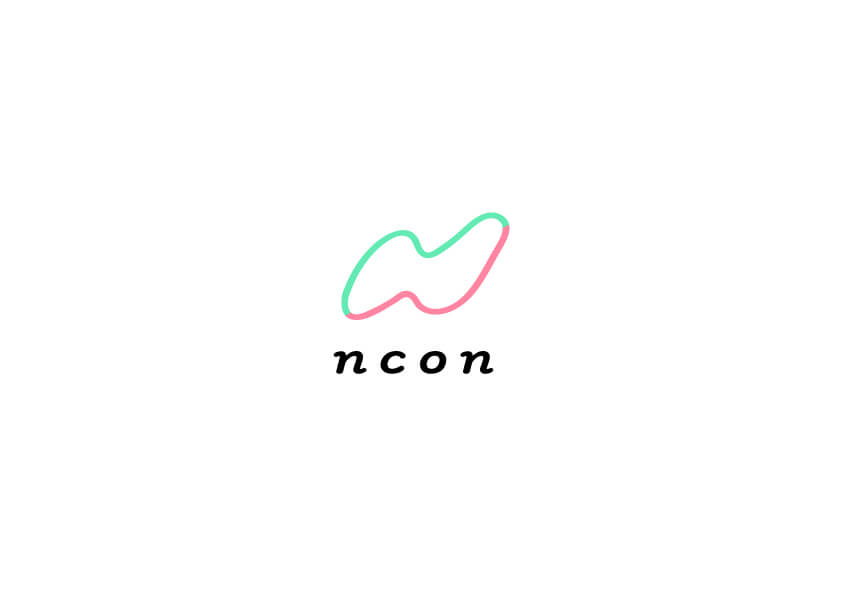

Ncon
Nconというドワンゴが新たに始めた結婚相談所のロゴラフ制作。 ロゴ提案会があるというのを小耳に挟んだのでこっそり内職をし飛び込みで提出したロゴです。制作時間0.5日
人間の曲線をイメージした柔らかいラインを保ち本能的に安心する感覚を与えつつカラーを使用する事によりロゴを印象ずけました。緑：男性 ピンク：女性をイメージしn conの中で 繋がっている様子を描いています。
指輪。という「結婚」を連想させるにはもっとも分かりやすい象徴を使いつつもターゲットである20代の女性に親和性の高い柔らかなテイストでまとめました。
ダイヤに会話する際のふきだしを融合させた案。
ふたりのチャットでのやり取りや会話のキャッチボールが積み重なる事により愛が育まれ結婚にいたると考える為、必要不可欠な「会話」にフューチャーした案を制作。
またそれが美しく輝いている様を表現しました。
「ありのままのアナタでいれる結婚を」というキャッチコピーから全てをさらけ出す。という意味で「ばけの皮を剥がす」ということわざを連想し、制作したロゴ。 おばけ(利用するユーザー)がかわをはいいで新しい自分をさらけだそうとしている様子を表現(もう少しちゃんと表現したかったです..すみません) また、ハードルを上げず親しみのあるサービスにする為には、生きているものがいた方が本能的に親しみがわくと考えます。
BACK